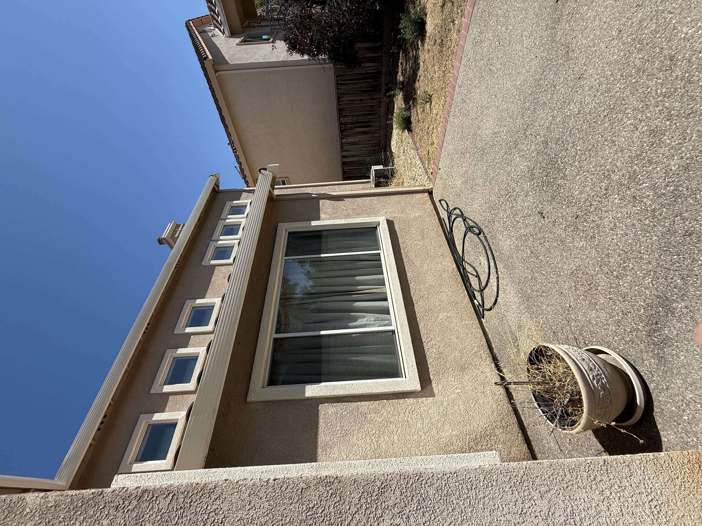

Project 1: Perspective & Dolly Zoom
Part 1: Picture of Self (First is closeup, second is zoomed in from a distance)


Part 2: Architectural Perspective Compression (First is a near position, second is farther away but zoomed in)


Part 3: Dolly Zoom

⬅ Back to main page